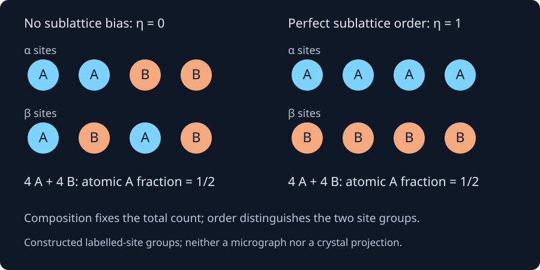

2. Chemical order, site populations and composition bases
Two specimens each contain four A atoms and four B atoms. In the first, each of two equally large site groups contains two of each species. In the second, every site of the first group contains A and every site of the second contains B. Both specimens have atomic composition $x_A=1/2$. Their chemical order differs. A computational model that stores only the overall composition has discarded exactly the variable needed to distinguish them.
The second substantive lecture develops solid solutions, substitutional and interstitial occupancy, compounds, chemical order, components and composition units, then overall versus phase composition. The complete local machine transcript was read sequentially. The finite-site enumeration, vacancy example and internally consistent two-phase counting table below are original teaching constructions. Several recognized words and board counts are ambiguous; no comprehensive audiovisual audit is claimed. The exposition does not use an unspecified-temperature solubility range as material data.
2.1 A solute must occupy something L2 · 00:46
A crystalline solution accommodates more than one chemical constituent within one crystalline phase. The IUPAC mixed-crystal entry identifies the host-lattice setting and discourages extending this usage to amorphous materials. Calling a material a solid solution therefore describes a phase, rather than a collection of visibly separate pure-solid particles. It does not establish its stable composition range at every temperature.
In a substitutional description, a solute occupies sites belonging to the host's principal lattice. The lecture uses Cu and Ni as its substitutional example. In an interstitial description, smaller solute atoms occupy specified spaces between host sites; carbon in iron supplies the lecture's example. The geometry identifies possible sites. The energetics, temperature, pressure and competing phases determine how many are actually occupied in equilibrium. Counting geometric holes does not measure a solubility limit.
A simple substitutional model with $N$ occupied sites and no vacancies has $N_A+N_B=N$. Its atomic fraction $x_B=N_B/N$ is also the B site fraction. Introduce vacancies, and that equality fails. With 60 A atoms, 20 B atoms and 20 vacant sites, there are 100 sites but only 80 atoms. Consequently
Here $y$ denotes a site fraction and $x$ an atomic fraction. Site fractions sum to one when the vacancy species is included; atomic fractions sum to one over atoms. A vacancy contributes a site occupation category but contributes no atom to the denominator of $x_B$. This distinction becomes essential when a thermodynamic database represents vacancies explicitly.
For an equally explicit interstitial construction, let $N$ host atoms fill a host sublattice, and let an interstitial sublattice contain $rN$ available sites. Suppose only B or a vacancy can occupy those sites. If their B site fraction is $y_B$, then $N_B=rNy_B$, whereas the total atom count is $N+rNy_B$. Therefore
The ratio $r$ is dimensionless and belongs to the chosen site model. For the constructed case $r=1$, one-quarter interstitial occupancy gives one-fifth B among all atoms. Even full occupation would give $x_B=1/2$, not one. Neither this limiting composition nor the choice $r=1$ is asserted to be an iron–carbon phase's stability limit. This is a denominator check, not an assessed alloy calculation.
2.2 A compound formula is a constraint, not a complete phase model L2 · 04:54
A stoichiometric compound has a specified ratio in an idealized formula: $A_3B$ contains three A atoms per B atom, so $x_B=1/4$. A line-compound model treats the phase as having exactly that composition. Real phases may instead possess a finite homogeneity range through antisite occupations, vacancies or other defects. That range depends on conditions and must be distinguished from the ideal formula.
The lecture contrasts fixed-composition compounds and phases with compositional freedom. Fe$_3$C provides a useful formula-counting example: its ideal carbon atomic fraction is one-quarter. Because carbon is a nonmetal, it is more precise here to call it a carbide or compound than to make every compound an intermetallic. “Intermetallic” is useful for compounds of metallic constituents, but the adjective alone supplies neither a crystal structure nor a quantitative free energy.
A formula and a structure label answer different questions. $A_3B$ fixes atom ratios; it does not specify how those atoms are arranged. Conversely, a structure prototype can occur in more than one chemical system. The AFLOW Cu$_3$Au prototype entry gives the $L1_2$ structure as a primitive cubic lattice with a four-atom basis: Au at a corner position and Cu at the three face-centre basis positions. It also lists Ni$_3$Al among compounds of this type. We use this verified example rather than infer a formula from the transcript's ambiguous spoken quiz notation.
Pure elements, solutions and compounds are therefore not three mutually exclusive labels for every possible microscopic attribute. A compound phase can be crystalline and chemically ordered; it can also accommodate defects and a composition range. A substitutional phase can undergo an ordering transition. The model must state which degrees of freedom its labels retain.
2.3 Translational order and chemical order are distinct L2 · 06:41
Periodic site geometry is one kind of order. The distribution of chemical species over those sites is another. An ideal substitutional alloy can preserve a periodic underlying site lattice while assigning A and B to its sites without a persistent species preference between equivalent site groups. A chemically ordered phase instead distinguishes groups of sites by their average chemical occupations. Neither statement should be confused with the absence or presence of all local atomic correlations.
The B2 construction makes the distinction concrete. Put A at $(0,0,0)$ and B at $(1/2,1/2,1/2)$ in units of a cubic cell edge $a$, and repeat by the translations $a\hat{\mathbf x}$, $a\hat{\mathbf y}$ and $a\hat{\mathbf z}$. Ignoring species, the points occupy body-centred-cubic positions. But translating the chemically labelled pattern by $(a/2,a/2,a/2)$ interchanges A and B. It does not reproduce the same species-labelled crystal when A and B differ. The ordered structure is described by a primitive cubic Bravais lattice with a two-atom basis. AFLOW's B2 entry gives these primitive vectors and basis positions and lists AlNi among its examples.
This reasoning also explains why a Bravais lattice cannot be identified by drawing circles and then forgetting their chemical labels. All lattice points must be equivalent under the full periodic description. Monatomic BCC and perfectly ordered B2 share an unlabelled point geometry while differing in chemically allowed translations. The labels carry physical information.
To quantify this information in a deliberately simple model, divide the sites into equal populations $\alpha$ and $\beta$. Assume full occupation by A or B, with no vacancies, and define $p_A^\alpha$ and $p_A^\beta$ as the respective fractions of A. The global composition is their mean:
For the equiatomic case $x_A=1/2$, define the signed order parameter $\eta=p_A^\alpha-p_A^\beta$. Solving the sum and difference equations gives
The bounds follow from requiring both occupations to lie in $[0,1]$. Perfect preference for A on $\alpha$ gives $\eta=1$; reversing the site labels gives $\eta=-1$. Equal average occupations give $\eta=0$. The sign distinguishes the two labelled variants rather than a different overall composition. Away from equiatomic composition the allowable range changes; equation (2.4) must not be reused without its composition constraint.

Notice what composition has and has not determined. Equations (2.3)–(2.4) permit an entire interval of order parameters at the same $x_A$. Selecting the equilibrium value would require a free-energy model and a temperature, as well as the specified constraints. The occupancy equations alone cannot choose it.
2.4 Equal populations do not prove randomness
Choosing one atom uniformly from a specimen containing $N_A$ A atoms and $N_B$ B atoms gives $P(A)=x_A$. That is an exact counting statement. It is not a statement that every specified site has A occupancy probability $x_A$. In perfect B2 order, a site known to belong to the A sublattice has A probability one in the ideal model, although the global atomic fraction is one-half.
Even when equivalent sites share the same marginal probability, neighbouring occupations need not be independent. Let $P(B\mid A;1)$ be the conditional probability that a first-shell neighbour of an A atom is B. The independent, macroscopically large random-alloy model gives this probability as $x_B$. A convenient dimensionless diagnostic is
For $x_B=1/2$ and a stipulated conditional probability $3/4$, $\alpha_1=-1/2$. Unlike neighbours are enhanced relative to the independent reference. This pair statistic is not the long-range sublattice parameter $\eta$: a sample can have equivalent average site populations yet correlated nearby pairs. A fixed finite population also has a small sampling-without-replacement correction; after selecting one A from an eight-atom equiatomic set, a uniformly chosen distinct remaining atom is B with probability $4/7$, not $1/2$. That finite-population effect must not be misidentified as an energetic preference.
This distinction has experimental consequences. Owen, Playford, Stone and Tucker's Cu$_3$Au study uses total scattering and atomistic fitting to examine local chemical order beyond the long-range average structure. Its equation (5) defines the conditional-probability comparison used in (2.5). The paper reports ordering already present in a quenched sample and explicitly discusses possible evolution during quenching. Thus a preparation intended to preserve disorder is not itself proof of random occupations. Its discussion also warns that data-processing errors can create misleading fitted configurations. These results motivate measuring the relevant correlation and stating the reference model, rather than treating “disordered” as permission to assume independence.
2.5 Components belong to the thermodynamic description L2 · 11:53
A component is an independent constituent used to express composition subject to the allowed reactions and constraints. In a nonreacting binary metallic system, choosing the two elemental constituents is natural. A pure-water liquid–vapour system can be described with H$_2$O as one component; observing two phases does not turn it into a two-component system. Counting phases and counting independent components are different operations.
A stoichiometric phase inside an Al–Ni system may have a fixed Al:Ni ratio while the system still has two independently conserved elemental amounts. The phase's ideal formula constrains its own composition. It does not erase the ability to add Al or Ni to the entire system, where other phases may then become necessary. Conversely, if a problem restricts all material to one fixed-ratio species and permits no independent constituent variation, its effective compositional degrees of freedom differ. State the system and its constraints before counting.
This matters computationally because an overly restricted component set can exclude the very decomposition the calculation is meant to test. A calculation that permits only AB units cannot represent partition into an A-rich phase and a B-rich phase by merely adjusting phase amounts. Conservation must be written for the independently conserved constituents, with phase models that can represent the proposed states.
2.6 Specify the counted entity before writing mole percent L2 · 14:33
The mole is the SI unit of amount of substance. The BIPM definition fixes $N_A=6.02214076\times10^{23}\ \mathrm{mol}^{-1}$ exactly and requires the elementary entities to be specified. For a chosen entity type, $n_i=N_i/N_A$ has units mol. An amount fraction $n_i/\sum_jn_j$ is dimensionless; multiplying it by 100 expresses amount percent. The unit mol is not merely a synonym for an arbitrary count.
If each counted entity is an atom, the common $N_A$ cancels and amount fraction equals atomic fraction. If the entities are molecules, molecular amount fraction generally differs from atomic fraction. Consider a deliberately ideal counting mixture of 5 mol sucrose molecules, C$_{12}$H$_{22}$O$_{11}$, and 95 mol water molecules, H$_2$O. Water is 95% of the molecules. The amounts of atoms are instead 60 mol C, 300 mol H and 150 mol O: 510 mol atoms in all. Oxygen is $150/510=5/17$ of the atoms. Neither number can be relabelled as the other's percentage.
Mass fraction introduces molar masses and another normalization. For atomic amount fractions $x_i$ and atomic molar masses $M_i$ in a consistent unit such as g/mol,
Derive the first formula by choosing an arbitrary total atomic amount $n$: species $i$ has mass $nx_iM_i$, and the total mass is $n\sum_jx_jM_j$. The arbitrary scale cancels. The inverse follows by choosing an arbitrary total mass and dividing each species mass by its molar mass. This derivation identifies which entities the $M_i$ must match.
For ideal Fe$_3$C, use explicitly rounded teaching values $M_{\mathrm{Fe}}=56\ \mathrm{g/mol}$ and $M_{\mathrm C}=12\ \mathrm{g/mol}$. One formula amount contains 168 g Fe and 12 g C per mole of formula units in this model, so
Thus 25 atomic percent C is about 6.667 mass percent under these rounded values. Higher-precision molar masses would change the last digits. Those digits are not an experimental measurement of a phase boundary, nor do they establish whether this compound is stable at a specified condition.
2.7 A phase composition needs its own denominator L2 · 19:42
The lecture's board-counting exercise motivates a necessary bookkeeping separation. The machine transcript gives mutually inconsistent counts, so the following table is a new, internally consistent example rather than a claimed recovery of unseen board entries. Suppose phase $\alpha$ contains 18 A and 26 B atoms, while phase $\gamma$ contains 12 A and 4 B atoms. The latter has the ideal A$_3$B ratio.
| Region | A atoms | B atoms | Total atoms | Atomic $x_A$ |
|---|---|---|---|---|
| $\alpha$ | 18 | 26 | 44 | $9/22$ |
| $\gamma$ | 12 | 4 | 16 | $3/4$ |
| Whole specimen | 30 | 30 | 60 | $1/2$ |
Define $f_\alpha^{(n)}$ as the fraction of the total amount of atoms residing in phase $\alpha$. It is $44/60=11/15$ here; $f_\gamma^{(n)}=4/15$. These are not volume fractions, mass fractions, or fractions of the number of grains. Counting conserved A atoms gives
The bar marks the overall composition, while the superscript identifies a phase composition. Equation (2.8) is a weighted average with matching bases: atomic concentrations weighted by phase atomic amounts. Averaging the two phase concentrations equally would give $51/88\approx0.5795$, because it would silently assign the two phases equal atomic amounts instead of 44 and 16 atoms.
Eliminate $f_\alpha^{(n)}=1-f_\gamma^{(n)}$ and solve the linear equation to obtain the lever form
This requires distinct endpoint compositions and an overall composition between them. It establishes the only nonnegative phase atomic amounts consistent with these endpoints. It does not establish that these phases or endpoint compositions are thermodynamically stable. The same algebra applies to a stipulated nonequilibrium partition if each phase composition and amount has been measured.
To obtain mass fractions, first assign consistent atomic molar masses and compute each phase's mean molar mass per mole of atoms. To obtain volume fractions, additional phase density or molar-volume information is needed. A section showing 60% of one contrast is an area observation; treating it as a bulk volume fraction requires justified representative sampling. A bare atom-count table supplies neither density nor stereological evidence.
2.8 A static picture does not establish equilibrium L2 · 25:14
The recording closes by discussing single-phase and multiphase states in preparation for phase diagrams. A specimen may contain one phase or several whether or not it is at global equilibrium. A stationary-looking microstructure can be trapped by slow diffusion; an ordered pattern can be metastable; an image can miss a phase below its resolution. None of those possibilities is decided by conservation alone.
At fixed temperature and pressure, the later thermodynamic calculation will compare admissible Gibbs energies subject to component conservation and other stated constraints. A constrained or metastable calculation may exclude transformations that are accessible to global equilibrium. Before using its result, identify the ensemble, allowed phases and internal degrees of freedom. Site fractions and chemical order are precisely some of the variables such a model may minimize over.
2.9 Enumerate first, then interpret
The following standard-library program enumerates all $\binom84=70$ assignments of four A atoms to eight labelled sites. Four sites belong to each sublattice. If $k$ A atoms occupy $\alpha$, the remaining $4-k$ occupy $\beta$. There are $\binom4k\binom4{4-k}=\binom4k^2$ assignments at that value, and $\eta=k/2-1$. Summing the five counts recovers 70 independently of the direct enumeration.
The central bin has more assignments than either perfectly ordered bin. This is a counting fact. A thermal probability would also need energies and an ensemble; the program does not assume that all configurations have the same energy or calculate a transition temperature. It then checks the fraction conversions and phase conservation using exact rational arithmetic.
"""Exact teaching constructions: composition, sublattices and phase balances."""
from fractions import Fraction as F
from itertools import combinations
from math import comb
# Eight labelled sites: first four alpha, last four beta; exactly four A.
hist = {k: 0 for k in range(5)}
for occupied in combinations(range(8), 4):
hist[sum(i < 4 for i in occupied)] += 1
assert list(hist.values()) == [comb(4, k)**2 for k in range(5)]
assert sum(hist.values()) == comb(8, 4) == 70
print('A on alpha | eta | labelled configurations')
for k, count in hist.items():
print(k, F(k, 2)-1, count, sep=' | ')
# All configurations have x_A=1/2, but eta ranges from -1 to 1.
assert all(F(k + (4-k), 8) == F(1, 2) for k in hist)
# Site fractions count vacancies; atomic fractions do not.
x_B, y_B = F(20, 80), F(20, 100)
assert x_B == F(1, 4) and y_B == F(1, 5)
print('Vacancy example: atomic x_B =', x_B, '; site y_B =', y_B)
# Generic interstitial model: r=1 interstitial site per host atom.
r, y = F(1), F(1, 4)
x = r*y/(1+r*y)
assert x == F(1, 5) and x/(r*(1-x)) == y
print('Interstitial example: y_B =', y, '; atomic x_B =', x)
# Explicitly rounded molar masses, g/mol: Fe 56, C 12.
x_C, M_C, M_Fe = F(1, 4), F(12), F(56)
w_C = x_C*M_C/(x_C*M_C + (1-x_C)*M_Fe)
assert w_C == F(1, 15)
print('Fe3C rounded-mass construction: carbon mass fraction =', w_C)
# Original consistent two-phase table: alpha (18A,26B), eta (12A,4B).
counts = [(18, 26), (12, 4)]
N = sum(a+b for a, b in counts)
phase_f = [F(a+b, N) for a, b in counts]
phase_x = [F(a, a+b) for a, b in counts]
x_A = sum(f*c for f, c in zip(phase_f, phase_x))
assert phase_f == [F(11, 15), F(4, 15)]
assert phase_x == [F(9, 22), F(3, 4)] and x_A == F(1, 2)
lever_gamma = (x_A-phase_x[0])/(phase_x[1]-phase_x[0])
assert lever_gamma == phase_f[1]
print('Phase atom-amount fractions:', *phase_f)
print('Phase atomic compositions x_A:', *phase_x)
print('Overall x_A =', x_A, '; lever gamma fraction =', lever_gamma)
print('All exact conservation and enumeration checks passed.')A on alpha | eta | labelled configurations 0 | -1 | 1 1 | -1/2 | 16 2 | 0 | 36 3 | 1/2 | 16 4 | 1 | 1 Vacancy example: atomic x_B = 1/4 ; site y_B = 1/5 Interstitial example: y_B = 1/4 ; atomic x_B = 1/5 Fe3C rounded-mass construction: carbon mass fraction = 1/15 Phase atom-amount fractions: 11/15 4/15 Phase atomic compositions x_A: 9/22 3/4 Overall x_A = 1/2 ; lever gamma fraction = 4/15 All exact conservation and enumeration checks passed.
2.10 Problems with complete solutions
1. Identify the denominator. A substitutional model has 120 sites containing 72 A, 36 B and 12 vacancies. Compute atomic $x_B$, site $y_B$ and vacancy site fraction. Does $x_A+x_B+y_{\mathrm{Va}}=1$?
Solution
There are 108 atoms. Thus $x_B=36/108=1/3$, $x_A=2/3$, $y_B=36/120=3/10$ and $y_{\mathrm{Va}}=12/120=1/10$. Mixing the atomic and site normalizations gives $2/3+1/3+1/10=1.1$, so the proposed sum is not a valid normalization. The site fractions instead satisfy $72/120+36/120+12/120=1$. Vacancies belong in the site sum.
2. Invert the interstitial model. There are two interstitial sites per host atom and no host vacancies. What interstitial occupancy gives overall $x_B=1/5$? What composition would full interstitial occupancy give?
Solution
Use $r=2$ in (2.2): $y_B=(1/5)/[2(4/5)]=1/8$. Check with eight host atoms: there are sixteen interstitial sites and two B atoms at one-eighth occupancy, so B is two of ten atoms. With full occupation, $x_B=2/(1+2)=2/3$. This is a geometric model limit, not a measured solubility or stability statement.
3. Separate composition and order. At equiatomic composition, take $p_A^\alpha=0.8$. Find $p_A^\beta$, $\eta$ and the A probability for a uniformly chosen site. Can that global probability be used for a site already known to belong to $\alpha$?
Solution
Equation (2.3) requires $p_A^\beta=0.2$ and hence $\eta=0.6$. A uniformly chosen site samples the equal sublattices with probabilities one-half, giving $P(A)=0.5(0.8)+0.5(0.2)=0.5$. Conditional on $\alpha$, the stated occupancy probability is 0.8. Replacing it by 0.5 discards the information supplied by the site label. The numbers specify average occupations and do not, by themselves, specify pair correlations.
4. Count the order bins. In the eight-site enumeration, what fraction of labelled assignments has $\eta=0$ if all 70 assignments are sampled uniformly? What fraction has $|\eta|=1$? Explain why neither result determines the physical equilibrium fraction at a chosen temperature.
Solution
Zero order parameter means $k=2$, with $\binom42^2=36$ assignments, so its uniform-sampling probability is $36/70=18/35$. Perfect positive and negative order have $k=4$ and $k=0$, one assignment each; their combined probability is $2/70=1/35$. Uniform sampling is the stipulated distribution in this question. Real thermal sampling also weights configurations by their energy, under specified ensemble conditions. The enumeration alone supplies no energies or temperature dependence.
5. Translate between composition bases. Use rounded Fe and C molar masses from (2.7). A specimen has carbon mass fraction $1/15$. Recover atomic $x_C$. Then explain why the result does not prove that the entire specimen is Fe$_3$C.
Solution
Equation (2.6) gives $x_C=[(1/15)/12]/[(1/15)/12+(14/15)/56]=(1/180)/(1/180+1/60)=1/4$. This equals the ideal formula's atomic fraction. A mixture of phases can have the same overall composition, however, and composition does not determine crystal arrangement or equilibrium. Phase identification needs additional evidence or a thermodynamic comparison of allowed states.
6. Recover a phase amount and test feasibility. Keep $x_A^\alpha=9/22$ and $x_A^\gamma=3/4$. Find the phase atomic amounts at overall $\bar x_A=3/5$. What happens at $\bar x_A=4/5$?
Solution
The endpoint gap is $3/4-9/22=15/44$. At $3/5$, the numerator is $3/5-9/22=21/110$, so $f_\gamma^{(n)}=(21/110)(44/15)=14/25$ and $f_\alpha^{(n)}=11/25$. The weighted average is $3/5$. At $4/5$, the numerator is $43/110$, yielding $f_\gamma^{(n)}=86/75>1$ and a negative $\alpha$ amount. The proposed endpoints cannot represent that overall composition with nonnegative amounts. This flags an inadmissible phase assumption; it does not justify accepting a negative phase fraction.
7. Distinguish three kinds of evidence. A specimen has equal average occupations on two site groups, $x_B=1/2$, and measured $P(B\mid A;1)=3/4$. Its microscope image appears unchanged for one hour. Which of zero sublattice bias, random independent occupations, enhanced unlike neighbours and global equilibrium follow?
Solution
The specified equal group populations give $\eta=0$ for this two-sublattice parameter. Equation (2.5) gives $\alpha_1=-1/2$, indicating enhanced unlike neighbours relative to the independent macroscopic random reference. Independence is contradicted by the specified conditional probability. Global equilibrium does not follow from an hour of apparent visual stationarity: limited spatial resolution and slow transformation kinetics can hide continuing relaxation or a metastable state. The conclusion must match the variable actually measured.
Sources and provenance
- Prof. K. Guruvidyathri, University of Hyderabad, NPTEL Essential physical metallurgy concepts 2. Complete local ASR read sequentially; the headings retain the lecture's progression. The two-phase table is explicitly reconstructed as an original consistent example.
- IUPAC mixed crystal: terminology boundary for crystalline solutions.
- AFLOW B2 and AFLOW $L1_2$: actual primitive vectors and chemically labelled basis positions. No lattice parameter is fitted here.
- BIPM SI mole definition: entity specification and exact Avogadro constant.
- Owen et al., Analysis of short-range order in Cu$_3$Au using X-ray pair distribution functions, accepted manuscript, equation (5), experimental procedure and discussion/conclusions: local-order diagnostic, data-processing limitations and quench-history qualification. Finite-site examples and rational checks are derived here.